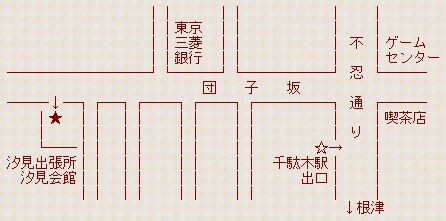

以下の通り、対局＆宴会オフを開催します。 ぜひ、お気軽にご参加ください。
| 開催日 | 平成12年10月22日(日) |
| 場 所 | 東京都文京区 汐見会館 千代田線「千駄木」駅から徒歩2分 下記地図参照 |
| 定 員 | 30人 |
| 対 局 | 方法は特に決めていませんが、勝負よりも対局を 楽しんでいただくのが我々のオフの特徴です。 チェス、将棋、バックギャモン、チェッカーなどが行われています。 どんなゲームをするのかは、そのときの面子と参加者の気分によって 変化しますが、チェスでしたらみんな対局可能です。 また、将棋を指す人も多い傾向にあります。 盤・駒等を持参していただくとありがたく思います。 |
| １次会 | 午後1時〜5時 集合：直接会場へどうぞ 汐見会館（下記地図参照）にて対局 |
| ２次会 | 午後5時半ごろ〜午後8時ごろ 近くの店で飲み食い |
| ３次会 | その場の雰囲気で決める |
以下に簡単な地図を用意しておきます。
地下鉄千代田線千駄木駅（西日暮里駅から１駅、新御茶ノ水駅 から３駅、大手町駅から４駅）には、改札が２個あります。 根津、代々木上原方面の改札を出て、地上の出口に出ると、 すぐ左に大きな交差点があります。その交差点を左に曲がると、 団子坂という坂を登ることになります。坂の途中、東京三菱 銀行を右手に見ながら、200メートルほど上ったところに、 左手に文京区汐見出張所の建物があります。汐見出張所と 汐見会館は同じ建物になっていますので、団子坂に面した 階段を上った２階の和室が会場になっています。
以下の Mapion のホームページを見ると、より分かりやすいと思います。
http://www.mapion.co.jp/cgi/m?no=1091993500196900000
千葉チェス掲示板 への書き込み、幹事の関宛への メール、 ニフティーの会議室への書き込み、いずれでも御都合のよろしい方法でどうぞ。 １次会のみ参加なのか、２次会まで参加なのかを明記して ください。人数によっては、２次会会場の予約も考えます。
現在までの参加表明者は、以下の通りです。
| お名前 | 参加表明場所 | 参加場所 | 種目 |
| JIROさん | ニフティー | 1,2次会 | 将棋、チェス |
| 浩子さん | JIRO さんの友人 | 1,2次会 | 将棋 |
| itoちゃん | 浩子さんの友人 | 1,2次会 | 将棋 |
| あさひさん | ニフティー | 全部 | 将棋、チェス、BG |
| やんとんさん | ニフティー | 1-3次会 | 将棋、チェス、BG |
| 関 | 幹事 | 全部 | 将棋、チェス、BG |